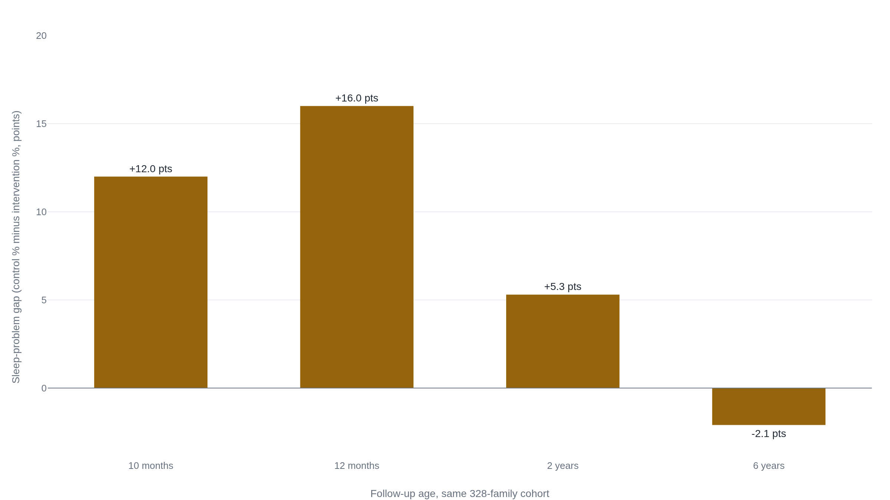

The trials built to catch sleep-training harm found none, and the benefit faded by six years
Salivary cortisol and the Strange Situation, the standard test of infant attachment, are what the trial built to catch harm actually measured, in infants ages 6 to 16 months.
Cortisol fell, not rose, in the trial that measured it
Gradisar and colleagues randomized 43 infants aged 6 to 16 months to graduated extinction (14 infants), bedtime fading (15), or a sleep-education control (14).1 Then they measured what worried parents most want to know about a "cry it out" style method: what it does to a baby's stress system. Salivary cortisol, sampled morning and evening, showed "small-to-moderate declines" in both active groups compared with control over the weeks of treatment, not increases.1 At 12 months, the same infants and mothers went through the Strange Situation, the standard laboratory test of infant attachment security. The trial found no significant difference between groups in secure-insecure attachment classification, and none in emotional or behavioral problems.1 The authors' own conclusion: both methods "provide significant sleep benefits above control, yet convey no adverse stress responses or long-term effects on parent-child attachment or child emotions and behavior."1
That result runs against a much-cited worry. A 2012 study of infants in an intensive five-day sleep program found their cortisol stayed elevated at bedtime even after they stopped crying, since read as evidence that sleep training leaves an infant distressed in a way a parent can no longer see.2 Both findings can be true without carrying equal force.
A distinction worth stating plainly, not folded into a hedge: Gradisar's trial is small, about 14 infants per arm. A null result at that size is real information, but a different claim than a null result in a trial powered to rule a real effect out. Gradisar's attachment finding is no evidence of harm. It is not evidence of no harm. Two claims run through this research: that behavioral methods help babies settle and help exhausted parents, and that they do not damage a child's longer-term development. Both are what the largest trials conclude, but not equally well supported, and the gap between them is where a child's age, family circumstances, and the safe-sleep floor underneath any sleep decision all matter.
The sleep benefit is broad, but the mood benefit depends on where a mother started
Hiscock and Wake randomized 156 mothers of infants 6 to 12 months with a reported sleep problem to a behavioral sleep intervention, three nurse consultations built around controlled crying, or a written-information control.3 At two months, the sleep problem had resolved in 53 of 76 intervention infants (69.7 percent) against 36 of 76 control (47.4 percent), P=.005. Maternal depression fell more with intervention across the whole sample, but the gap, a 3.7-point drop against 2.5, did not clear significance, P=.06.3 Narrow the comparison to the 33-per-arm subgroup who started with a clinically elevated depression score, and the picture changes. 26 of 33 in that subgroup resolved their sleep problem against 13 of 33 in control, P=.001. Their depression score fell further too, a 6.0-point drop against 3.7, P=.01.3 For the average mother, the mood benefit faded fast. For a mother already showing signs of depression, it held longer.
A larger cluster-randomized trial repeats the sleep half of that pattern at greater scale. 328 Melbourne families with a sleep problem reported at 7 months were assigned, by nurse center rather than as individuals, to brief behavioral advice, controlled comforting or "camping out," or usual care.4 At 10 months, 56 percent of intervention families still reported a sleep problem against 68 percent of control, adjusted odds ratio 0.58. At 12 months the gap widened, 39 percent against 55 percent, adjusted odds ratio 0.50.4 Maternal depression scores moved with it, favoring the intervention arm at both points.4
Reviewers who pool many trials rather than read one land on a more careful number. A 2020 systematic review found "modest short-term effects" for graduated extinction and consistent-routine methods, rated parent-education approaches inconsistent, and flagged that evidence for infants under six months and high-risk families remained thin.5 A 2022 meta-analysis pooling 10 randomized trials confirmed the sleep direction, a pooled odds ratio of 0.51, roughly halving the odds. On maternal depression, pooling worked against the single-trial story, shown below.6
| Study | Depression finding | Significant? |
|---|---|---|
| Hiscock 2002 | Benefit only in mothers starting with an elevated EPDS score (P=.01); no benefit in the whole sample (P=.06).3 | Conditional |
| Hiscock 2007, 12 mo | Whole-sample adjusted difference −1.7 (95% CI −2.6 to −0.7).4 | Significant |
| Park 2022, pooled | Pooled mean difference −0.22 across 10 trials (95% CI −0.68 to 0.25).6 | Not significant |
The sleep benefit survives pooling across trials. The mood benefit, strongest in mothers who started depressed, does not.
The 16-point gap became a 2-point gap, then reversed
The 328-family cluster trial above did not stop at 12 months. The same cohort was followed to 2 years, then to 6.7 At 2 years, maternal depression was still lower in the intervention arm, 15.4 percent against 26.4 percent at the community cutoff. The child sleep-problem gap had narrowed, 27.3 percent against 32.6 percent, and the authors reported that "neither parenting style nor child mental health differed markedly between the intervention and control groups" by that point.7
Five years later, at child age 6, Price and coauthors reached the same cohort again: 225 of 326 eligible children (69 percent), compared intervention against control by intention-to-treat, adjusted for confounders including maternal depression and socioeconomic disadvantage.8 No outcome showed a significant difference. Total score on the Strengths and Difficulties Questionnaire: adjusted mean difference 0.5 (P=.5). Clinical-range emotional problems: 12.3 percent against 16.5 percent (P=.07). Reported sleep problem: 9.0 percent against 6.9 percent (P=.2), the rate now higher in the former intervention group. "Abnormal" diurnal cortisol, the objective stress-hormone marker: 28.8 percent against 21.7 percent (P=.4). Child-parent closeness, disinhibited attachment, and maternal depression: none significantly different either.8

Price and coauthors' own conclusion is understated and exact: "Behavioral sleep techniques have no marked long-lasting effects (positive or negative)."8 Both directions of the finding fade together. The short-term sleep and mood benefit fades "beyond 2 to 3 years' postintervention," and by 6 years the reported sleep-problem rate had reversed enough that the former intervention group's rate was slightly higher than control's, though not by a significant margin.8
31 percent of the original sample, 101 of 326 children, was lost by the 6-year follow-up. The authors are direct about what that costs the finding: the confidence intervals "did not rule out smaller long-term harms or benefits of the intervention that could be meaningful in public health research."8 Non-English-speaking and disadvantaged families were lost disproportionately, which the authors say makes the result less generalizable to those families, not more.8
The cortisol claim revisited, against the trials that ran a control group
Middlemiss and coauthors followed 25 infants, 4 to 10 months old, through a five-day inpatient program that used extinction of crying at bedtime, sampling cortisol from mother and infant at the start of the bedtime routine and again once the infant fell asleep, on two separate days.2 On day one, mother and infant cortisol tracked each other, rising and falling together around the shared stress of the pre-sleep period. By day three, the infants had stopped showing behavioral distress at bedtime, but their cortisol had not come down with it: the mother's, reading her infant's outward calm, fell, while the infant's, measured directly, did not.2
That is a real finding, worth taking seriously on its own terms. It is not, by itself, evidence that graduated sleep training harms infants generally. The study ran no comparison group of infants left alone, so there is no same-age baseline against which to call the trained infants' cortisol elevated, and it was not randomized.2 It measured 25 infants in an intensive five-day inpatient program, not the slower, at-home graduated methods the RCTs above test. What it documents is a physiological pattern in one small, uncontrolled study, not a harm verdict about sleep training as families typically practice it.
The trials that did run a control group, and measured a version of the same signal, did not find it. Gradisar's controlled comparison found cortisol falling, not rising, in the trained infants relative to control.1 Price and coauthors' 6-year follow-up measured diurnal cortisol directly, the same "abnormal" waking-to-lunch profile clinicians use as an objective stress marker, and found no significant difference, as described above.8 Whatever the dissociation Middlemiss documented represents, it has not shown up as a lasting stress signature in either randomized trial that specifically looked for one.
Price and coauthors frame this as a live, unsettled argument in the literature their trial was designed to help resolve, not one it closes by itself. They quote one 2011 position: that behavioral techniques "could prevent parents from responding consistently and sensitively to their child, thereby leading to long-term adverse impacts on child-parent bonding, child stress regulation, mental health, and emotional development." Against it, they set a 2011 response: "there is no evidence that behavioral techniques cause harm."8 Their own 6-year data land closer to the second position: no measured harm on any outcome, at any follow-up this trial lineage ran. But a null result in a sample that lost 31 percent of its participants cannot rule out a real, smaller effect the first position might still describe.
None of these trials tested an infant younger than six months
Every trial cited so far enrolled infants at 6 months or older. Gradisar's infants were 6 to 16 months.1 Hiscock and Price's cohort had a sleep problem reported at 7 months and received the behavioral advice around 8 months.4 Below that age, the evidence is a different body of work entirely. A 2013 systematic review searched two decades of literature specifically for interventions in infants younger than six months and found the methods had not been shown to reduce crying, prevent later sleep or behavioral problems, or protect against postnatal depression in that age band.9 It reported the opposite of reassurance on harm, too: possible unintended effects in very young infants, more problem crying, premature cessation of breastfeeding, worsened maternal anxiety. It also flagged elevated SIDS risk when very young infants are moved away from a caregiver to make extinction easier to run.9 For a household with an infant around 5 or 6 months old, that places everything covered above close to, but not yet reliably inside, the tested age range. Reported sleep problems in this window are common enough to be easy to mistake for something wrong: infant sleep problems are "reported by up to 45% of mothers in the second 6 months of life."8
Underneath any decision about a settling method sits a separate, non-negotiable layer: safe sleep. The American Academy of Pediatrics' 2022 policy statement on sleep-related infant death sets recommendations that apply "for every sleep by every caregiver until the child reaches 1 year of age," independent of whatever settling approach a family uses.10 Room-sharing without bed-sharing, ideally for at least the first 6 months, is one of them. Infants sleeping in a separate room are 2.75 to 11.5 times more likely to die suddenly and unexpectedly than infants who room-share without bed-sharing, and room-sharing on its own reduces risk by as much as 50 percent.10 Roughly 3,500 US infants die of sleep-related causes each year, a rate flat since 2000 after a sharp decline through the 1990s. The AAP is "unable to recommend bed sharing under any circumstances." Bed-sharing under 4 months carries 5 to 10 times the baseline risk even without smoking present. A couch or armchair carries 22 to 67 times the baseline risk.10
These numbers rest on a different kind of evidence than everything above them. No randomized trials exist behind the safe-sleep recommendations, because randomizing an infant to an unsafe sleep condition would be unethical, so case-control studies are the best evidence available.10 That is the ceiling on what a safety question can be tested with, not a weaker standard adopted for convenience, and it is why safe sleep reads as non-negotiable in a way a settling method, tested in actual trials, does not.
The same pediatric body that wrote that safety floor gives ordinary settling advice for babies 4 months and older, treating the two as compatible rather than competing. Put a drowsy baby to bed rather than a sleeping one. Do not rush in the moment a baby stirs, since infants "need time to put themselves back to sleep," and a six-month-old waking overnight and resettling within minutes "is normal."11 Safe sleep is the constant. Settling method is the variable the trial evidence bears on.
The takeaway is narrow: a graduated method past six months, a clinician for everything else
- Graduated extinction and bedtime fading, tested in trials of infants 6 months and older, reduce parent-reported sleep problems, with an independent pooled estimate of roughly half the odds.6
- No randomized trial that measured attachment, behavioral problems, or stress-hormone patterns, at 12 months or 6 years, found a difference between trained and control infants.18
- Safe sleep, back position, firm flat surface, room-sharing without bed-sharing, is a separate, case-control-backed floor that applies regardless of settling method, for the whole first year.10
- The benefit is not permanent in the trial lineage that followed it longest: the sleep-problem gap narrowed year over year and had reversed sign, though not significantly, by 6 years.8
- The maternal-depression benefit is real for mothers who start out depressed, but disappears once many trials are pooled together.6
- No trial in this record enrolled an infant younger than 6 months, and the one review that looked at that age band specifically found no benefit and some evidence of harm.9
The trials that tested behavioral sleep methods and looked for harm did not find it, and that is real evidence, not merely an absence of alarm. It is also a set of null results in samples of a few hundred families at most, not a guarantee extending to every infant, method, or age. Sleep training an infant of 6 months or older, run as a graduated method rather than an unsupervised extinction, has real trial support behind both the sleep benefit and the absence of measured harm.1 Below 6 months, the evidence runs out before the reassurance does.9
For a baby just entering the tested age range, the practical takeaway is narrow, not sweeping. A graduated method, checking in on a set schedule or gradually fading a parent's presence at bedtime, has real trial support.1 So does waiting: nothing in this record shows an untrained infant is accumulating harm, and a six-month-old waking overnight and settling again on its own is what the AAP calls normal.11
A pediatrician, not this record, is the right place to sort out whether a sleep problem is actually a sleep problem. Reflux, a growth spurt, an ear infection, or a feeding difficulty can look like the sleep problem these trials measured without being one. The same is true whenever a family is not certain the crib, room, and sleep position meet the safe-sleep floor above; that conversation comes first.10 This record describes what randomized trials found in the populations they enrolled, not one particular baby, and it does not stand in for the clinician who can examine that baby.
Sources
- Gradisar M, Jackson K, Spurrier NJ, et al. · Behavioral Interventions for Infant Sleep Problems: A Randomized Controlled Trial, Pediatrics 2016
- Middlemiss W, Granger DA, Goldberg WA, Nathans L · Asynchrony of Mother-Infant HPA Axis Activity Following Extinction of Infant Crying Responses, Early Human Development 2012
- Hiscock H, Wake M · Randomised Controlled Trial of Behavioural Infant Sleep Intervention to Improve Infant Sleep and Maternal Mood, BMJ 2002
- Hiscock H, Bayer J, Gold L, Hampton A, Ukoumunne OC, Wake M · Improving Infant Sleep and Maternal Mental Health: A Cluster Randomised Trial, Archives of Disease in Childhood 2007
- Reuter A, Silfverdal SA, Lindblom K, Hjern A · A Systematic Review of Prevention and Treatment of Infant Behavioural Sleep Problems, Acta Paediatrica 2020
- Park J, Kim SY, Lee K · Effectiveness of Behavioral Sleep Interventions on Children's and Mothers' Sleep Quality and Maternal Depression: A Systematic Review and Meta-analysis, Scientific Reports 2022
- Hiscock H, Bayer JK, Hampton A, Ukoumunne OC, Wake M · Long-term Mother and Child Mental Health Effects of a Population-based Infant Sleep Intervention, Pediatrics 2008
- Price AMH, Wake M, Ukoumunne OC, Hiscock H · Five-Year Follow-up of Harms and Benefits of Behavioral Infant Sleep Intervention: Randomized Trial, Pediatrics 2012
- Douglas PS, Hill PS · Behavioral Sleep Interventions in the First Six Months of Life Do Not Improve Outcomes for Mothers or Infants: A Systematic Review, Journal of Developmental & Behavioral Pediatrics 2013
- Moon RY, Carlin RF, Hand I; AAP Task Force on Sudden Infant Death Syndrome and Committee on Fetus and Newborn · Sleep-Related Infant Deaths: Updated 2022 Recommendations for Reducing Infant Deaths in the Sleep Environment, Pediatrics 2022
- American Academy of Pediatrics / HealthyChildren.org · Getting Your Baby to Sleep, reviewed 2024